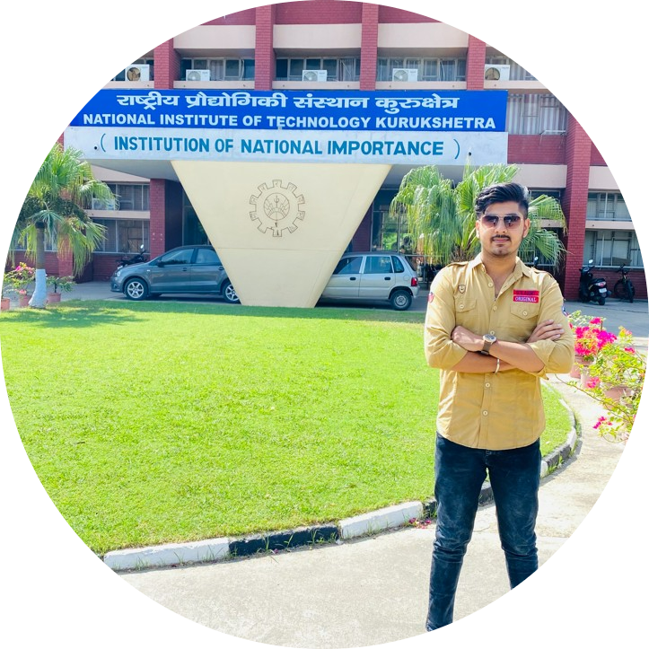

|  |
Manav ChauhanStudent of MCA at NIT Kurukshetra. A National Institute of Technology PG student who is enrolled in the Master of Computer Application (MCA) Programme. Dedicated to software engineering, specialising in full-stack web development, algorithms, and Blockchain Technology. Searching mostly for SDE and Full Stack Development positions |
CGPA : 9.1
2021-24
Percentage : 78%
2018-21
Percentage: 92.4%
2018
CGPA : 10.0
2017
You can open the Education Webpage by CLICKING HERE.
| Technical Skills | C/Java/Python, HTML/CSS, JavaScript, SQL, BlockChain, Solidity, Data Structure and Alogrithms. |
| Soft Skills | Time Management, Teamwork, Problem-solving, Documentation, Engaging Presentation. |
| Miscellaneous Skills | VS Code, Remix IDE, Linux, Git and Github. |
You can open the Skills Webpage by CLICKING HERE.
Portfolio Website:Developed a Portflio Website displaying all about me using me skills, involving the use of HTML, CSS and JavaScript.
KYC Using Blockchain:Build a project that improves the ordinary KYC method and provides a better environment along with increased security.
You can open the Projects Webpage by CLICKING HERE.
You can open the Extra-Curricular Activities Webpage by CLICKING HERE.
You can Contact me at: CONTACT HERE